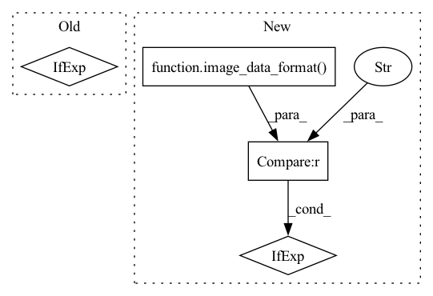

Pattern ID :8027
Before Change
def mhsa_with_multi_head_relative_position_embedding(
inputs, num_heads=4, key_dim=0, global_query=None, out_shape=None, out_weight=True, qkv_bias=False, out_bias=False, attn_dropout=0, name=None
):
channel_axis = -1 if image_data_format() == "channels_last" else 1
input_channel = inputs.shape[channel_axis]
height, width = inputs.shape[1:-1] if image_data_format() == "channels_last" else inputs.shape[2:]
After Change
inputs = layers.Permute([2, 3, 1])(inputs)
elif image_data_format() == "channels_first" and data_format == "channels_last":
inputs = layers.Permute([3, 1, 2])(inputs)
conv_channel_axis = -1 if image_data_format() == "channels_last" else 1
if global_query is not None:
// kv = layers.Dense(qk_out * 2, use_bias=qkv_bias, name=name and name + "kv")(inputs) // For GCViT weightsIn pattern: SUPERPATTERN
Frequency: 3
Non-data size: 4
Instances Fragment ID: 28461234
Project Name: leondgarse/keras_cv_attention_models
Commit Name: 2ba27b0132168f3590dd4b3bead9edc15a70ba7d
Time: 2023-02-11
Author: leondgarse@gmail.com
File Name: keras_cv_attention_models/coatnet/coatnet.py
M Class Name: AnonimousClass
N Class Name: AnonimousClass
M Method Name: mhsa_with_multi_head_relative_position_embedding(11)
N Method Name: mhsa_with_multi_head_relative_position_embedding(10)
M Parent Class:
N Parent Class:
M File Name: keras_cv_attention_models/coatnet/coatnet.py
N File Name: keras_cv_attention_models/coatnet/coatnet.py
M Start Line: 25
M End Line: 57
N Start Line: 32
N End Line: 74
Before Change
bias_init = tf.constant_initializer(-tf.math.log((1 - 0.01) / 0.01).numpy())
class_features = det_header_pre(fpn_features, num_channels, head_depth, use_sep_conv, activation=activation, name="classifier_")
class_out = det_header_post(class_features, num_classes, num_anchors, bias_init, use_sep_conv, classifier_activation, name="classifier_")
outputs = tf.concat([bboxes_out, class_out, object_out], axis=-1) if use_object_scores else tf.concat([bboxes_out, class_out], axis=-1)
else:
outputs = tf.concat([bboxes_out, object_out], axis=-1) if use_object_scores else bboxes_out
outputs = keras.layers.Activation("linear", dtype="float32", name="outputs_fp32")(outputs)After Change
// Regard input_shape as force using original shape if first element is None or -1,
// else assume channel dimention is the one with min value in input_shape, and put it first or last regarding image_data_format
input_shape = backend.align_input_shape_by_image_data_format(input_shape)
channel_axis = -1 if image_data_format() == "channels_last" else 1
backbone.trainable = False if freeze_backbone else True
use_object_scores, num_anchors, anchor_scale = anchors_func.get_anchors_mode_parameters(anchors_mode, use_object_scores, num_anchors, anchor_scale)
Fragment ID: 28461235
Project Name: leondgarse/keras_cv_attention_models
Commit Name: 4d4ea978b42024953a1eba7469530dec223545e0
Time: 2023-02-14
Author: leondgarse@gmail.com
File Name: keras_cv_attention_models/efficientdet/efficientdet.py
M Class Name: AnonimousClass
N Class Name: AnonimousClass
M Method Name: EfficientDet(22)
N Method Name: EfficientDet(22)
M Parent Class:
N Parent Class:
M File Name: keras_cv_attention_models/efficientdet/efficientdet.py
N File Name: keras_cv_attention_models/efficientdet/efficientdet.py
M Start Line: 168
M End Line: 200
N Start Line: 180
N End Line: 225
Before Change
block_name = stack_name + "block{}_".format(block_id + 1)
block_drop_rate = drop_connect_rate * global_block_id / total_blocks
mlp_ratio = cur_mlp_ratios[block_id] if isinstance(cur_mlp_ratios, (list, tuple)) else cur_mlp_ratios
is_attn_block = True if block_id > num_block - cur_num_attn_blocks - 1 else False
nn = meta_block(nn, is_attn_block, mlp_ratio=mlp_ratio, layer_scale=layer_scale, drop_rate=block_drop_rate, activation=activation, name=block_name)
global_block_id += 1
After Change
block_drop_rate = drop_connect_rate * global_block_id / total_blocks
mlp_ratio = cur_mlp_ratios[block_id] if isinstance(cur_mlp_ratios, (list, tuple)) else cur_mlp_ratios
if block_id >= attn_block_start_id:
nn = layers.Permute([2, 3, 1])(nn) if block_id == attn_block_start_id and image_data_format() == "channels_first" else nn
nn = attn_block(nn, mlp_ratio=mlp_ratio, layer_scale=layer_scale, drop_rate=block_drop_rate, activation=activation, name=block_name)
nn = layers.Permute([3, 1, 2])(nn) if block_id == num_block - 1 and image_data_format() == "channels_first" else nn
else: Fragment ID: 28461232
Project Name: leondgarse/keras_cv_attention_models
Commit Name: e05e233f369a1d58f912872b1581a80d15cacc3f
Time: 2023-02-07
Author: leondgarse@gmail.com
File Name: keras_cv_attention_models/efficientformer/efficientformer.py
M Class Name: AnonimousClass
N Class Name: AnonimousClass
M Method Name: EfficientFormer(17)
N Method Name: EfficientFormer(17)
M Parent Class:
N Parent Class:
M File Name: keras_cv_attention_models/efficientformer/efficientformer.py
N File Name: keras_cv_attention_models/efficientformer/efficientformer.py
M Start Line: 68
M End Line: 110
N Start Line: 71
N End Line: 120